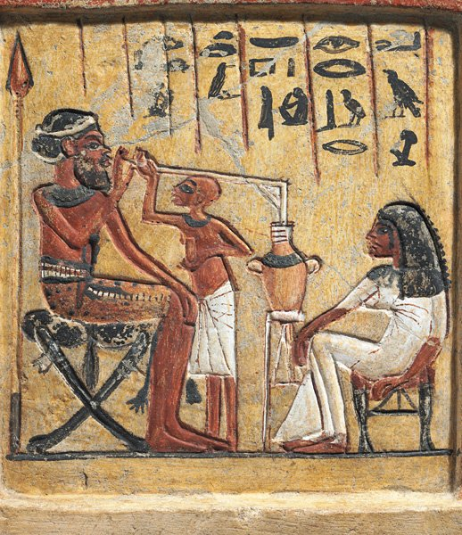
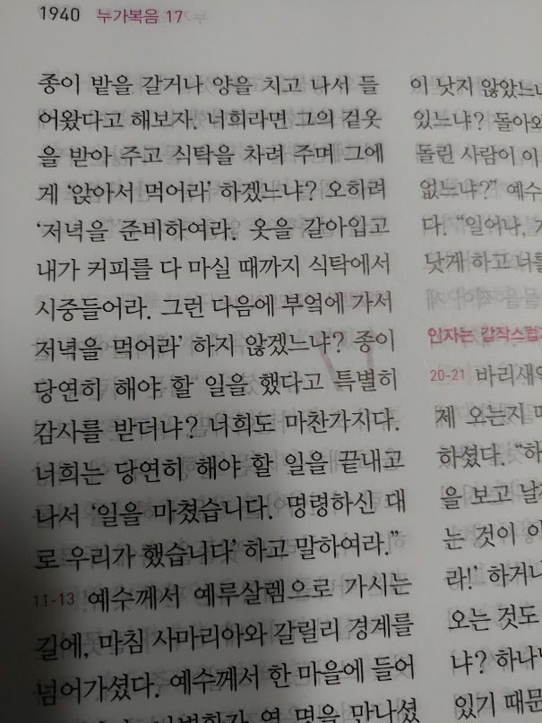
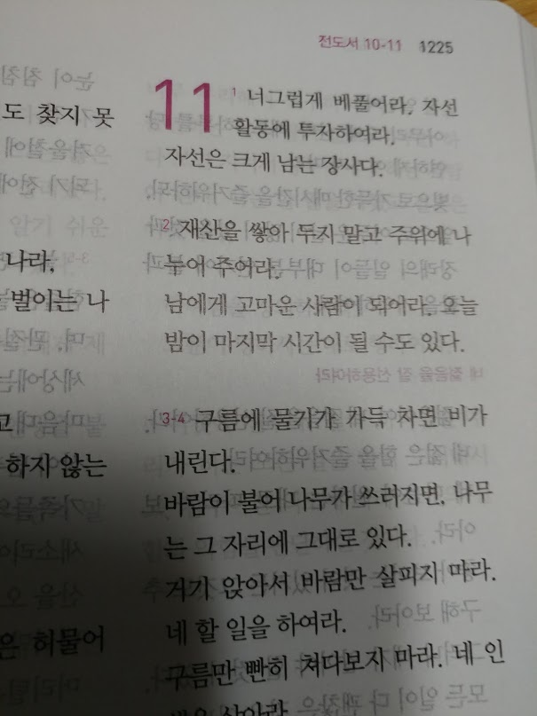

왜 성경에는 맥주 이야기가 없을까 ?
게시: 2019-06-10T06:30:28+09:00
구약성서 중에서 흥미롭게 읽었던 부분이 모세가 유대민족을 이집트에서 데리고 나오는, 즉 출애급하는 장면입니다. 몇가지 신기하게 생각했던 점이 있었는데, 가장 의아했던 부분은 왜 저렇게 유대인들이 자꾸 하나님을 잊어버리고 배신하는가 하는 점이었습니다. 현대인들처럼 하나님의 기적을 직접 목격한 적이 없는 사람들이라면 모르겠습니다. 그러나 유대인들은 신이 아니고는 불가능한 그런 기적들을 여러번 집단으로 목격했습니다. 하나님께서 모세를 통해 온갖 기적을 베풀면서 유대민족을 탈출 시켜주었고, 또 사막에서 물이 없어 목이 마르자 샘물을 터뜨려 주셨으며, 먹을 것이 없자 만나를 하늘에서 내려주셨고, 만나만 먹으니 질린다 고기를 먹게 해달라 라며 아우성을 치자 메추리들을 떼로 보내주셨습니다. 그런데도 모세가 잠깐 자리를 비우자마자 하나님을 잊고 금송아지 우상을 만들었으니, 유대민족이 단체로 메멘토에 걸린 것도 아닐텐데 왜 저러나 싶었습니다. 그런 심각한 와중에도 제 관심은 음식 종류에 대해 집중되었습니다. 보니까 이스라엘인들이 마늘과 파를 식생활에 도입한 것이 이집트에서라더니 정말 그렇더라고요. 그것도 공짜로 먹었다고 하니, 이집트에서 피라미드 건설하던 노동자들이 학대받는 노예가 아니었을 뿐만 아니라 나름대로 상당한 복지 혜택을 받으며 일하던 사람들이라는 이야기가 진짜였나보다 싶었습니다. (민 11:4) 그들 중에 섞여 사는 다른 인종들이 탐욕을 품으매 이스라엘 자손도 다시 울며 이르되 누가 우리에게 고기를 주어 먹게 하랴 (민 11:5) 우리가 애굽에 있을 때에는 값없이 생선과 오이와 참외와 부추와 파와 마늘들을 먹은 것이 생각나거늘 (민 11:6) 이제는 우리의 기력이 다하여 이 만나 외에는 보이는 것이 아무 것도 없도다 하니 실제로 이집트 기록에도 피라미드 건설 노동자들에게 마늘을 지급했다는 기록이 있고, 또 투탄카멘 파라오의 피라미드 안에서 마늘이 발견되기도 했다지요. 흔히 성경을 역사책으로 보면 안 된다고들 하지만, 그래도 성경도 100% 모두는 아니라도, 꽤 중요한 역사적 사료라고 저는 생각합니다. 그런데 그런 관점에서 볼 때 한가지 이상한 점이 있습니다. 이집트 피라미드 노동자들에게 급료로 빵과 맥주를 지급할 정도로 고대 이집트는 맥주를 많이 마시던 나라였습니다. 그런데 그런 이집트에서 300년 가량 머물렀던 이스라엘 사람들이 마늘과 파 먹는 법은 배웠으면서 맥주 만들어 마시는 법은 배우지 못했다면 매우 이상한 일일 것입니다. 하지만 성경을 보면 포도주 이야기는 자주 나오지만 맥주 이야기는 전혀 나오지 않습니다. 가령 예수님께서도 물을 포도주로 바꾸셨지 맥주로 바꾸지는 않으셨지요. 대체 어찌 된 일일까요 ?

저는 처음에 이 의문이 들었을 때, 혹시 이스라엘인들이 이집트에서 오랫동안 (혹자는 215년 간, 혹자는 430년 간) 살았다는 이야기 자체가 허구 아니었을까 라고 생각하기도 했습니다. 실제로 이집트의 모든 문서나 비석, 벽화 등에서 이스라엘 사람들의 대규모 거주와 탈출에 대해 기록하고 있는 것이 없다고 알고 있습니다. 뭐 기나긴 이집트 역사를 생각해보면 별 영향력 없는 외국인 노동자들이 300년 살다가 나간 것이 기록할 만한 사건이 아닐 수도 있지요. 하지만 이집트에서 300년 살다 온 민족이 맥주를 모른다는 것은, 마치 미국에서 평생을 보낸 재미교포라는 사람이 햄버거를 모른다는 소리와 비슷하지 않겠습니까 ? 그런데 성경을 자세히 살펴보면 대개 포도주와 함께 등장하는 술이 있습니다. 바로 '독주'라고 표현되는 술이 바로 그것입니다. 가령 사무엘상 1장 도입부를 보면 이런 장면이 나옵니다. 나중에 사무엘을 낳게 되는 늙은 한나가 신전에 가서 아이를 낳게 해달라고 기도하느라 한참을 입술로 중얼중얼거리니 제사장인 엘리가 보고 이렇게 타이릅니다. "할마씨요, 와 그렇게 살아요 ? 고마 술 끊고 집에 가이소." 그러자 한나가 날카롭게 대꾸합니다. "아니거든요 ? 저 와인도 양주도 안 마셨거든요 ?"
물론 이건 제가 이해한 장면이 그렇다는 것이고, 실제로 성서에 나오는 것은 아래와 같습니다. (삼상 1:13) 한나가 속으로 말하매 입술만 움직이고 음성은 들리지 아니하므로 엘리는 그가 취한 줄로 생각한지라 (삼상 1:14) 엘리가 그에게 이르되 네가 언제까지 취하여 있겠느냐 포도주를 끊으라 하니 (삼상 1:15) 한나가 대답하여 이르되 내 주여 그렇지 아니하니이다 나는 마음이 슬픈 여자라 포도주나 독주를 마신 것이 아니요 여호와 앞에 내 심정을 통한 것뿐이오니 저 '포도주나 독주'라고 표현한 것이 영문판에는 뭐라고 되어 있나 찾아보면 보통 'wine or strong drink' 라고 되어 있습니다. 그러니까 우리 말로는 strong drink가 독한 술이라는 뜻의 '독주'라고 번역되는 것이 당연합니다. 보통 우리 말로 독주라고 할 때는 막걸리나 정종, 백세주 같은 것을 독주라고 부르지는 않고 소주나 빼갈, 위스키나 보드카, 브랜디나 진 같은 것을 독주라고 합니다. 즉, 단순 발효주가 아니라 발효주를 증류해서 알코올 함량을 잔뜩 높인 술을 독주라고 부르지요. 하지만 알코올 증류 기술은 일반적으로는 기원후 8세기 아랍 쪽에서 시작되었다고 전해지지요. 최후의 사사로 일컬어지는 사무엘 시대에 이스라엘 민족은 아직 철기 문명조차도 가지고 있지 못한 시기였습니다. 가령 사울이 이스라엘 최초의 왕이 된 이후 블레셋과 전투를 앞두고 있었을 때, 그의 군대 중에 제대로 된 칼이나 창을 든 자는 사울과 그의 아들 뿐이었습니다. (삼상 13:19) 그 때에 이스라엘 온 땅에 철공이 없었으니 이는 블레셋 사람들이 말하기를 히브리 사람이 칼이나 창을 만들까 두렵다 하였음이라 (삼상 13:20) 온 이스라엘 사람들이 각기 보습이나 삽이나 도끼나 괭이를 벼리려면 블레셋 사람들에게로 내려갔었는데 (삼상 13:21) 곧 그들이 괭이나 삽이나 쇠스랑이나 도끼나 쇠채찍이 무딜 때에 그리하였으므로 (삼상 13:22) 싸우는 날에 사울과 요나단과 함께 한 백성의 손에는 칼이나 창이 없고 오직 사울과 그의 아들 요나단에게만 있었더라 이렇게 기술 문명이 뒤떨어진 시대의 이스라엘에서 증류주를 만들 기술을 보유하고 있었다고는 생각되지 않습니다. 그런데 왜 한나는 '포도주나 독주'라는 표현을 썼을까요 ? 이건 영어 표현에서 일반적으로 strong drink라고 하는 것은 그냥 알코올성 음료를 뜻하는 것이기 때문입니다. 알코올이 없는 음료를 soft drink라고 부르는 것과 대조적으로 생각하시면 좋습니다. 알코올이 들어간 것을 hard drink라고 하지요. 반대로 알코올이 없거나 있어도 매우 약한 것은 thin drink라고도 합니다. 사자왕 리처드가 등장하는 영국 역사 소설 아이반호(Ivanhoe)의 한 장면에도 그런 부분이 나옵니다. 사자왕 리처드가 신분을 감추고 그저 '흑기사'라는 신분으로 영국에 잠입했을 때, 숲 속에서 터크 신부를 만나 그 신부의 오두막에서 하룻밤을 보내게 됩니다. 로빈훗에 나오는 뚱뚱하고 힘센 터크 신부는 여기서 리처드에게 말린 완두콩과 맹물을 저녁으로 같이 먹자고 내주는데, 리처드는 이런 음식과 마실 것을 먹고는 터크 신부가 저런 얼굴을 가질 수는 없다고 생각해서 한마디 합니다. “It seems to me, reverend father,” said the knight, “that the small morsels which you eat, together with this
holy, but somewhat thin beverage, have thriven with you marvellously."
기사는 말했다. "내가 보기엔 말이오, 경외하는 신부님께서 드시는 이 보잘 것 없는 음식과 이 신성하지만 어째 좀 밍밍한 음료(thin beverage)에 비해 신부님의 풍채가 너무 좋으신 것 같습니다." 원래 구약 성서 곳곳에 나오는 포도주와 독주라는 표현에서, 독주라는 단어의 히브리 원어는 shekhar입니다. 이는 포도주와 같은 과일 발효주와 상대되는 개념으로서 곡물 발효주를 뜻하는 것입니다. 그러니까 알코올 도수가 높은 술을 뜻하는 것이 아니라 그냥 곡물로 만든 술을 뜻하는 것입니다. 원래 이집트 뿐만 아니라 바빌로니아 등 고대 중근동 지방에서는 맥주를 많이 마셨습니다. 바빌로니아의 함무라비 법전에도 맥주에 대한 언급이 있을 정도였지요. 그러니까 이집트에서 300년, 바빌로니아에서 70년을 보내야 했던 이스라엘 사람들은 맥주를 모르고 싶어도 모를 수가 없었습니다. 또 고대 중근동에서는 맥주가 일상적 음료일 뿐만 아니라 약으로도 처방되었는데, 바로 그런 부분이 성서 잠언에도 나옵니다. (잠 31:6) 독주는 죽게 된 자에게, 포도주는 마음에 근심하는 자에게 줄지어다 (잠 31:7) 그는 마시고 자기의 빈궁한 것을 잊어버리겠고 다시 자기의 고통을 기억하지 아니하리라 설마 성서에서 알코올 도수 40도의 독한 술을 곧 죽을 정도로 허약한 사람에게 주라고 하겠습니까 ? 저기서 말하는 독주란 맥주를 뜻하는 것이 분명합니다. 실제로 영어 성서 영문판 중 New International Version (NIV)에서는 저 shekhar라는 단어를 strong drink라고 번역하지 않고 그냥 beer라고 번역하고 있습니다. Proverbs 31:6 Let beer be for those who are perishing, wine for those who are in anguish! Proverbs 31:7 Let them drink and forget their poverty and remember their misery no more. 이렇게 구약 시대에는 맥주를 많이 빚었던 이스라엘 민족이 왜 신약 시대에는 맥주를 마시지 않게 되었는가에 대해서는 딱히 설명이 없는 것 같습니다. 호프도 없고 냉장고도 없던 시절의 맥주는 사실 맛이 별로 없었을텐데, 그런 점 때문에 포도주와의 오랜 경쟁에서 패배한 것이 아닐까 합니다. 또 전통적으로 곡물이 부족하여 맥주는 마시지 않고 포도주만 마셨던 그리스 세력이 알렉산드로스 대왕의 원정을 통해 페르시아를 격파하고 중근동 지방까지 뻗치면서 더욱 포도주의 득세가 퍼지지 않았을까 합니다. 약간 이야기가 옆으로 샙니다만, 제가 아무리 봐도 이해가 가지 않는 성경 구절이 있습니다. 전도서 11장 1~2절입니다. (전 11:1) 너는 네 떡을 물 위에 던져라 여러 날 후에 도로 찾으리라 (전 11:2) 일곱에게나 여덟에게 나눠 줄지어다 무슨 재앙이 땅에 임할는지 네가 알지 못함이니라 이 구절은 결국 주변 사람들에게 베풀고 살라는 취지의 이야기로 저는 인식했습니다. 그런데 저 1절 부분의 '떡을 물 위에 던지라'는 부분은 정말 이해가 안 갔습니다. 며칠 뒤에 도로 찾을 거라면 그냥 애초에 던지지를 말 것이지 왜 떡을 물 위에 던지라는 것일까요 ? 저게 당시 흔하게 사용되던 히브리어의 무슨 관용구 같은 것인가 라는 생각도 들었지요. 저는 성경을 읽다가 이해가 안 가는 부분이 있으면 그건 번역의 문제라고 보고 - 저는 히브리어나 헬라어를 못하니까 - 영문판을 찾아보곤 합니다. 그런데 거기도 똑같이 번역되어 있더라고요. Ecclesiastes 11 King James Version (KJV) 1 Cast thy bread upon the waters: for thou shalt find it after many days. 2 Give a portion to seven, and also to eight; for thou knowest not what evil shall be upon the earth. 그런데 shekhar를 beer라고 과감히 번역하는 New International Version 버전에서도, 이 구절의 번역을 두고 엄청나게 고민을 했던 모양입니다. 결국 다음과 같이 번역했습니다. Ecclesiastes 11 New International Version (NIV) 1 Ship your grain across the sea; after many days you may receive a return. 2 Invest in seven ventures, yes, in eight; you do not know what disaster may come upon the land. 바다 건너 곡물 무역을 해라. 시간이 지나면 수익을 얻을 것이니라. 7~8개의 사업을 벌여라. 어떤 재앙이 올지 모르는 일이니라. 결국 원래의 '주변에 베풀고 살라'는 취지에서 약간 벗어나서 '하나님을 믿고 투자는 과감하게 하라'는 식의 이야기가 되어 버렸습니다. 저는 이 버전이 오히려 좀 이상한 번역이라고 개인적으로 생각했습니다. 그런데 어떤 분인지는 모르겠지만 성서 고고학회(Biblical Archaeology Society)의 Michael M. Homan이라는 분은 '떡을 물에 던지라'는 표현을 맥주를 빚으라는 것으로 해석을 했습니다. 생각해보면 원래 고대 이집트의 맥주는 먼저 빵을 만든 뒤 그 빵을 잘게 부수어 물에 풀어넣어서 만들었다고 하지요. 그렇게 보면 정말 딱 맞아 떨어지긴 합니다. 맥주를 빚어서 혼자 마시지 말고 주변 사람 7~8명에게 베풀라는 이야기지요. 원래 이렇게 성서 해석을 교회나 무슨 위원회 같은 것에 따르지 않고 자기 멋대로 하기 시작하면 그게 이단의 시작이라고 하지요. 그러니 제가 감히 '저 부분은 기존 성경의 해석이 틀렸고 저건 맥주 빚는 이야기가 맞다'라고 주장하기는 좀 그렇습니다. '메시지 성경'이라는 좀 특이한 버전의 성경이 있습니다. 유진 피터슨(Eugene Peterson)이라는 목사님이 쓰신 이 성경은 이해하기 어려운 성서를 굉장히 파격적으로 쉽게 풀이한 것으로 유명합니다. 그런데 현대인들에게 쉽게 이해를 시키려다보니 '커피'라든가 '베스트 드레서' 등등의 파격적인 단어가 막 나오기도 합니다. 그래서 어떤 교단에서는 이 성서를 성경으로 인정하지 않기도 하고 유진 피터슨 목사를 이단이라고 말하기도 하는 모양입니다. 하지만 제가 다니는 장로교 통합파 교회에서는 참고용으로는 인정하고 있습니다.

(메시지 성경의 일부입니다. 뭐 취지는 이해가 가는데, 예수님이 커피 운운하시는 것으로 번역하니까 좀 이질감이 들긴 하더군요.) 이 메시지 성경에서는 뭐라고 하는지 궁금해서 찾아봤습니다. 과연 저를 실망시키지 않고 정말 파격적이더군요. 떡이니 물이니 하는 지엽적이고 해석 곤란한 것들은 다 없애버리고 그냥 '너그럽게 베풀거라, 자선 활동에 투자하여라' 라고 번역을 해놓았습니다. 저는 성경을 글귀 하나하나에 집착해서는 안되고 전체적인 말씀 이해에 집중해야 한다고 항상 생각합니다. 그런 점에서, 저는 저 메시지 성경의 전도서 11장 1절 해석이 굉장히 뛰어난 해석이라고 생각합니다.

Source : https://preachersinstitute.com/2012/12/26/did-ancient-israelites-drink-beer/ https://academic.oup.com/jn/article/131/3/951S/4687053
Historical Perspective on the Use of Garlic
Abstract. The objective of this review is to examine briefly the medical uses of garlic throughout the ages and the role that it was considered to play in prev
academic.oup.com